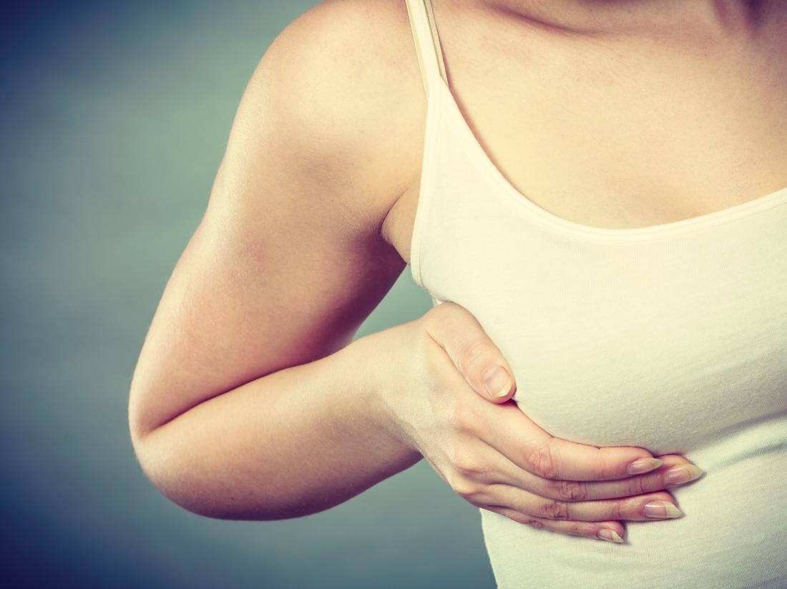

ရင္သား အလံုးေပၚျခင္း-Breast Lump

သင့္ရင္သားမွာ အလံုး တစ္လံုးလံုး ရွိေနတာမ်ဳိးကို သင့္ကိုယ္သင္ စမ္းသပ္ သတိထား ၾကည့္ဖူးပါသလား။
ရင္သားမွာ အလံုးေပၚတတ္တယ္ဆိုတာေကာ သင္ သိပါသလား။
ရင္သားမွာ ျဖစ္ေပၚလာတဲ့ အလံုးေတြက အမ်ားအားျဖင့္ ကင္ဆာအက်ိတ္ မဟုတ္ပါဘူး ။ ရင္သားအလံုးေတြဟာ စမ္းၾကည့္ၿပီး လႈပ္ၾကည့္လို႔ ရပါတယ္။
ရင္သား ႏွစ္ဘက္စလံုးမွာ ျဖစ္နုိင္ပါတယ္။ အမ်ဳိးသားေရာ၊ အမ်ဳိးသမီးေတြမွာပါ ျဖစ္တတ္ၿပီး အမ်ဳိးသမီးေတြကေတာ့ ပိုအျဖစ္မ်ားပါတယ္။
ဘာေၾကာင့္ အလံုးျဖစ္ရတာလဲ
ဓမၼာတာလာတဲ့အခ်ိန္မွာ ေဟာ္မုန္းေျပာင္းလဲမႈေတြ ျဖစ္ေပၚၿပီး ရင္သား ပံုစံ ေျပာင္းလဲမႈေတြ ျဖစ္တတ္ပါတယ္ ။ ဒါ့ေၾကာင့္ ရင္သားႀကီးထြားၿပီး နာက်င္တာ၊ အလံုးေပၚတာမ်ဳိး ျဖစ္ႏိုင္ပါတယ္။
တစ္ခါတရံ ရင္သားကေန အရည္ေတြ ထြက္တာမ်ဳိးေတြ႕ရပါတယ္။ ဓမၼလာတဲ့အခ်ိန္ အျဖစ္မ်ားၿပီး ေသြးဆံုးသြားရင္ေတာ့ ရင္သားအက်ိတ္ေပၚတာေတြ တျဖည္းျဖည္း ေပ်ာက္သြားတာမ်ဳိး ရွိပါတယ္။
-
-
-
-
-
တျခား အေၾကာင္းအရင္း
ကင္ဆာမဟုတ္တဲ့ ရင္သားအလံုးေတြ ျဖစ္လာရတဲ့ အေၾကာင္းအရင္းေတြ ကို အမ်ိဳးအစား ထပ္ခြဲလိ႔ု ရပါတယ္။ ေဟာ္မုန္းေျပာင္းလဲတာေၾကာင့္ ျဖစ္ေပၚတဲ့ အမ်ဳိးအစားအျပင္
- ပိုး၀င္တာ၊
- ဒဏ္ရာရတာ၊
- တခ်ဳိ႕ ပံုမွန္ ေသာက္သံုးရတဲ့ေဆးေတြေၾကာင့္ အလံုး ျဖစ္တတ္ပါတယ္။
ဘယ္လိုလကၡဏာေတြ ျဖစ္ရင္ သတိထားရမလဲ
- အလံုးက ရင္သားရဲ႕ သိသာထင္ရွားၿပီး ကြဲျပားေနတာ၊
- ဓမၼတာၿပီးဆံုးသြားေပမယ့္ အလံုးက မာၿပီး ဆက္ရွိေနတာ၊
- အလံုးရဲ႕ အရြယ္အစား ေျပာင္းလဲလာတာ၊
- အရင္ကထက္ ပိုၿပီး မာေက်ာလာတာ
- ရင္သားေတြ မာေတာင့္လာတာ၊
- အေရျပားေတြ နီရဲလာတာ၊
- ႏို႔သီးမွ အရည္ေတြ ထြက္တာေတြ ျဖစ္လာရင္ေတာ့ ဆရာ၀န္နဲ႔ တိုင္ပင္ကုသသင့္ပါတယ္။
ဘယ္လို ကုသရလဲ
ျဖစ္တဲ့ ရင္သားအလံုး အမ်ဳိးအစားေပၚ မူတည္ၿပီး ကြာျခားပါတယ္ ။ တခ်ဳိ႕ကေတာ့ ကုသမွႈမလိုပဲ ေပ်ာက္ကင္းသြားတာမ်ဳိး ရွိသလို တခ်ဳိ႕ကလည္း ေသာက္ေဆးနဲ႔ သက္သာသြားတာမ်ဳိး ရွိပါတယ္ ။ အပ္နဲ ့စုပ္ထုတ္ၿပီး ကုသနိုင္သလို ခြဲစိတ္မွႈတြ လုပ္ရတာလည္း ရွိတတ္ပါတယ္ ။ ဆရာ၀န္ႀကီးေတြနဲ႔ လိုအပ္သလို တိုင္ပင္ႏိုင္ပါတယ္။
ဘယ္လို ကာကြယ္ရမလဲ
အသက္ ၂၀ ျပည့္ၿပီးတဲ့ အမ်ဳိးသမီးတုိင္း တစ္နွစ္ကေန သံုးနွစ္တစ္ခါ ရင္သားစစ္ေဆးတဲ့နည္းနဲ႔ ေရာဂါႀကိဳတင္ ရွာၿပီး ေစာေစာစီးစီး ကုသနိုင္ပါတယ္။ အသက္ႀကီးလာလို႔ ေရာဂါ ရင္သားဆိုင္ရာ ေရာဂါလကၡဏာေတြ မရွိေတာင္ ရင္သား ဓာတ္မွန္ ပံုမွန္ ရိုက္ၾကည့္ စစ္ေဆးၿပီး ႀကိဳတင္ကာကြယ္သင့္ပါတယ္။
Source- ေဒါက္တာေအာင္ျပည့္ၿဖိဳးဦး